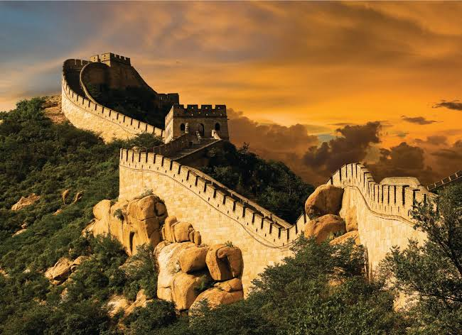

Muralla China (China)
Enorme fortificación construida para defender al imperio, mide más de 21.000 kilómetros y es una de las mayores obras arquitectónicas y maravillas del mundo.

Enorme fortificación construida para defender al imperio, mide más de 21.000 kilómetros y es una de las mayores obras arquitectónicas y maravillas del mundo.